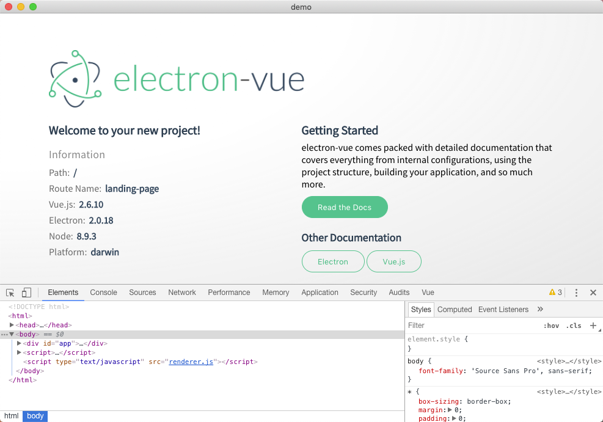

一个结合 vue 全家桶的集成解决方案。
运行上面提到初始化命令:
vue init simulatedgreg/electron-vue my-project
大部分配置之间选默认值，测试相关的选 no 之后会节省一部分安装依赖的时间会。其中开始的 vue 是 vue cli，如果失败可能和 vue cli 工具有关，运行中发现最新的 vue cli 3 不适合 simulatedgreg/electron-vue，你需要 vue cli 2:
# vue cli 2 的安装
npm install -g vue-cli
# vue cli 3 的安装
npm install -g @vue/cli
# 查看 vue cli 的版本
vue -V
electron-vue 集成了开发环境，可以快速上手:
# 安装依赖
npm install
# 启动开发
npm run dev
就可以直接调起应用程序界面和调试窗口:

然后打一个可运行的安装包出来，运行 npm run build 在 Mac 上可以打包出 Mac 版和 Linux 版， Windows 版的安装包只能在 Windows 上打包，可以打出 32 位和 64 位的两个版本。
注: 尝试了多种方案依然在 Mac 上打不出 Windows 的包。